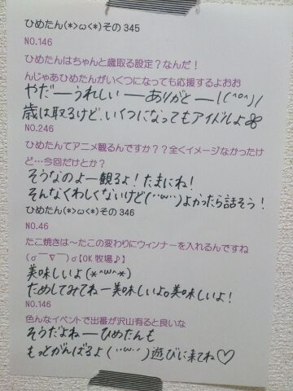

| 2013/12 20 Fri | ひめたん(*>ω<*)そ の383 |
あしゅりんたむ！たむたむ
今週末の全握のレーンが発表されました
まっちゅん (松村沙友理ちゃん)とペアです！
まっちゅんヾ(＠⌒ー⌒＠)ノ
まっちゅんよろしくねヾ(＠⌒ー⌒＠)ノ
まっちゅんファンのみなさん
よろしくお願いしますヾ(＠⌒ー⌒＠)ノ
初期の頃に一緒にキャンペーンで
大阪行ったりしたけど
握手で一緒になるのはそれ以来かな？
ふたりでペアは初です！
はじめましての方が
たくさんいらっしゃると思うけど
仲良くしてくれたら嬉しいですっ
ひめきゅんさんもよろしくね＊
１週間ぶりの方も
２週間ぶりの方も
はじめましての方も
お久しぶりの方も
楽しい１日にしましょーう♪

なるほどー
こんなゆるキャラいるかもしれない
そんなわけで
明日はいよいよ武道館ライブ本番！
こんな大きなステージで
ライブさせてもらえるなんて
私たちはほんとに幸せです(＊^^＊)
みなさんいつも本当にありがとう！
明日は一緒に
楽しいステージを作ってください＊＊
会場行くよーって方は
たぶん寒いから防寒対策お願いします！
忘れ物にも気をつけてね∩( ^ω^ )∩
お留守番チームの方は
ブログのレポ待っててくださいなーっと。
Amebaさんの方で
中継やっていただけるので
よかったら遊びに来てねー
いつもコメントありがとうございます
新堂本兄弟
チェックするよーって
みんなありがとうーよろしくね(〃ω〃)
新年一発目だよー
それから質問なんかもたくさんありがとう！
答えるのに時間かかっちゃうかもだけど
きっと答えるから待っててね◎

 ひめたんってメイクどうやって勉強してるの？
ひめたんってメイクどうやって勉強してるの？
メイクさんから
よく教えてもらうかな◎
乃木坂のおねーさんたちもステキなお手本です
質問で「メイクの方法教えて！」って
言ってくれるおにゃのこもいるんだけども
参考になるかなー？
自信はないけど、気になってくれてるなら
今度紹介するよーどきどきどきどき///
ひめたんは雪が降るとテンションあがる？
さがります！
ひめたんはちっちゃい頃から
雪だーわーいわーい楽しいなーってことには
ならない子だったのー！
だって寒いじゃーん( ´ ` )
ひめたんおすリラックス法
あったら教えてほしい!!
最近はお風呂でゆっくりするのが１日の楽しみ。
お湯につかったまんまちょっと寝ちゃうんだよねー
あっ危ないからみんなは真似しないでね？
でもお風呂すき！
ひめたんのブログの
コメント欄下２ケタに46を踏んだ方へ
手書きでコメ返するコーナー
＼ ひめたん46 ／

おうちに帰るまでが武道館！
気をつけて来てくださいねー
階段ですってんころりーんとか
シャレにならんよ(´；；｀)頼みますね
おまえが言うなって？
ごっごめんなさいごめんなさい←
ひめたんも気をつけますっ
明日転んでたら笑ってね......ね。
(＊´・ω・＊)
コメント(452)
2013/12/20 00:00